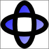

Практическое руководство. Создание объекта GeometryDrawing
В этом примере показано, как создать и отобразить GeometryDrawing. Объект GeometryDrawing позволяет создавать фигура с заливкой и структуры, связав Pen и Brush с Geometry. Geometry Описывает структуру фигуры Brush описывает заливку фигуры и Pen описывает контура фигуры.
Пример
В следующем примере используется GeometryDrawing для отображения фигуры. Фигура описывается GeometryGroup и два EllipseGeometry объектов. Фигуры закрашивается кистью LinearGradientBrush и ее контур рисуется пером Black Pen. GeometryDrawing Отображается с использованием ImageDrawing и Image элемент.
using System;
using System.Windows;
using System.Windows.Controls;
using System.Windows.Media;
using System.Windows.Media.Animation;
using System.Windows.Shapes;
namespace SDKSample
{
public class GeometryDrawingExample : Page
{
public GeometryDrawingExample()
{
//
// Create the Geometry to draw.
//
GeometryGroup ellipses = new GeometryGroup();
ellipses.Children.Add(
new EllipseGeometry(new Point(50,50), 45, 20)
);
ellipses.Children.Add(
new EllipseGeometry(new Point(50, 50), 20, 45)
);
//
// Create a GeometryDrawing.
//
GeometryDrawing aGeometryDrawing = new GeometryDrawing();
aGeometryDrawing.Geometry = ellipses;
// Paint the drawing with a gradient.
aGeometryDrawing.Brush =
new LinearGradientBrush(
Colors.Blue,
Color.FromRgb(204,204,255),
new Point(0,0),
new Point(1,1));
// Outline the drawing with a solid color.
aGeometryDrawing.Pen = new Pen(Brushes.Black, 10);
//
// Use a DrawingImage and an Image control
// to display the drawing.
//
DrawingImage geometryImage = new DrawingImage(aGeometryDrawing);
// Freeze the DrawingImage for performance benefits.
geometryImage.Freeze();
Image anImage = new Image();
anImage.Source = geometryImage;
anImage.Stretch = Stretch.None;
anImage.HorizontalAlignment = HorizontalAlignment.Left;
//
// Place the image inside a border and
// add it to the page.
//
Border exampleBorder = new Border();
exampleBorder.Child = anImage;
exampleBorder.BorderBrush = Brushes.Gray;
exampleBorder.BorderThickness = new Thickness(1);
exampleBorder.HorizontalAlignment = HorizontalAlignment.Left;
exampleBorder.VerticalAlignment = VerticalAlignment.Top;
exampleBorder.Margin = new Thickness(10);
this.Margin = new Thickness(20);
this.Background = Brushes.White;
this.Content = exampleBorder;
}
}
}
<Page
xmlns="http://schemas.microsoft.com/winfx/2006/xaml/presentation"
xmlns:x="http://schemas.microsoft.com/winfx/2006/xaml"
xmlns:PresentationOptions="http://schemas.microsoft.com/winfx/2006/xaml/presentation/options"
xmlns:mc="http://schemas.openxmlformats.org/markup-compatibility/2006"
mc:Ignorable="PresentationOptions"
Margin="20" Background="White">
<Border BorderBrush="Gray" BorderThickness="1"
HorizontalAlignment="Left" VerticalAlignment="Top"
Margin="10">
<Image Stretch="None" HorizontalAlignment="Left">
<Image.Source>
<DrawingImage PresentationOptions:Freeze="True">
<DrawingImage.Drawing>
<GeometryDrawing>
<GeometryDrawing.Geometry>
<!-- Create a composite shape. -->
<GeometryGroup>
<EllipseGeometry Center="50,50" RadiusX="45" RadiusY="20" />
<EllipseGeometry Center="50,50" RadiusX="20" RadiusY="45" />
</GeometryGroup>
</GeometryDrawing.Geometry>
<GeometryDrawing.Brush>
<!-- Paint the drawing with a gradient. -->
<LinearGradientBrush>
<GradientStop Offset="0.0" Color="Blue" />
<GradientStop Offset="1.0" Color="#CCCCFF" />
</LinearGradientBrush>
</GeometryDrawing.Brush>
<GeometryDrawing.Pen>
<!-- Outline the drawing with a solid color. -->
<Pen Thickness="10" Brush="Black" />
</GeometryDrawing.Pen>
</GeometryDrawing>
</DrawingImage.Drawing>
</DrawingImage>
</Image.Source>
</Image>
</Border>
</Page>
На следующем рисунке показан итоговый GeometryDrawing.

Для создания более сложных рисунков, можно объединить несколько графических объектов в один составной рисунок с помощью DrawingGroup.